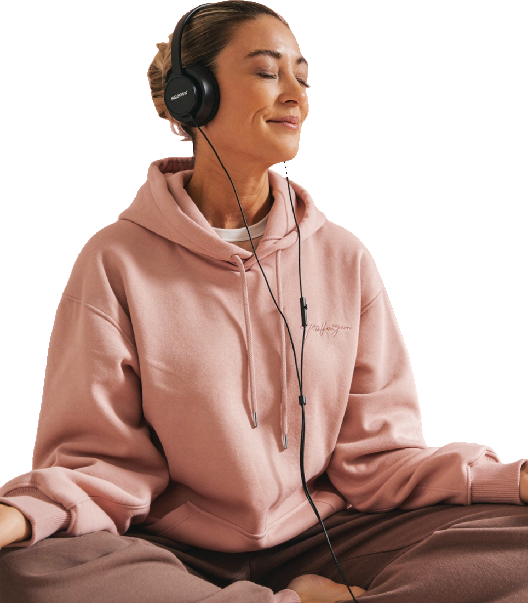

Mucho por tu calma y tu cuerpo. Menos por los sofocos intensos. Te lo contamos con datos.
Lo que sí puede darte
Un momento diario para bajar el ritmo y soltar tensión.
Más atención a tu respiración y a cómo te sientes.
Movimiento suave, fuerza de piernas y equilibrio.
Un hábito amable contigo, sin competir con nadie.
13
ensayos con 1.306 mujeres: frente a no hacer nada, el yoga redujo los síntomas de la menopausia en general y los psicológicos. Frente a otro ejercicio, los efectos fueron parecidos.
Cramer, Peng y Lauche, revisión sistemática y metaanálisis, Maturitas, 2018. Los autores advierten posible sesgo en varios estudios.

Nuestro semáforo
honesto
Para tu bienestar y tu movimiento: adelante, con las precauciones de la página 03.
Para el ánimo y el estrés: resultados prometedores, aunque los estudios son pequeños.
Como tratamiento de sofocos: la Menopause Society no lo recomienda por falta de evidencia suficiente.
The Menopause Society, declaración sobre terapias no hormonales, 2023.
tip
Si tus sofocos te quitan el sueño o la calma, el yoga puede acompañarte, pero no reemplaza hablar con tu médica sobre tratamientos con evidencia (Guía Integral, sección 5).